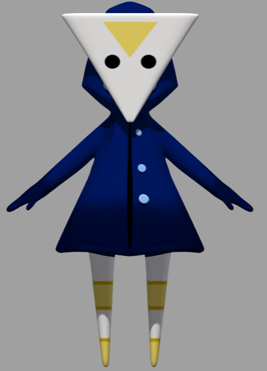
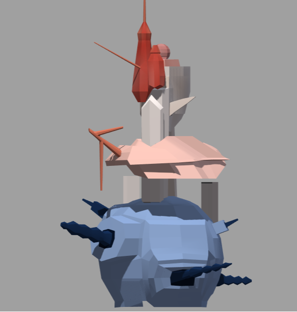
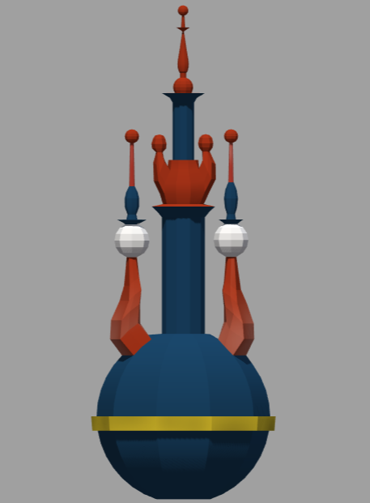

Mon rôle
Hourglass est un projet de groupe réalisé dans le cadre du cours de recherche et création numérique. Un thème nous a été donné et c'est l'espace-temps. Afin de respecter le thème donné, mon groupe et moi avons décidé de réaliser un jeu vidéo en associant oeuvre d'art et énigme. Dans ce projet j'ai réaliser la texture du personnage principal ainsi que celle des bâtiments présent dans l'un des niveaux du jeu. Un mission qui s'est avéré beaucoup difficile que prévue.
Les aléas de l'UV Mapping
La réalisation de la texture d'objet 3D à été une première pour et elle ne s'est pas
toujours avéré très simple. Je prends l'exemple du personnage, j'ai dû recommencer
plusieurs fois avant de parvenir au résultat ci-dessus, car il faut vérifier à chaque
fois si le rendu est bon ce qui fait qu'on peut se retrouver avec neuf versions de
fichier différentes. C'est un travail qui demande rigueur, patience et précision.
C'est une très bonne expérience semi-professionnel dans le cadre d'un projet de
travaux dirigés, universitaire.

